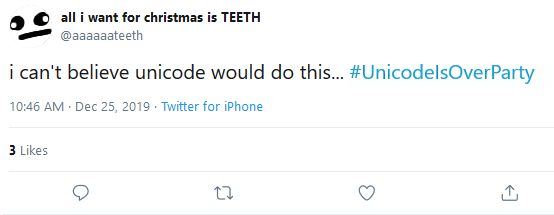
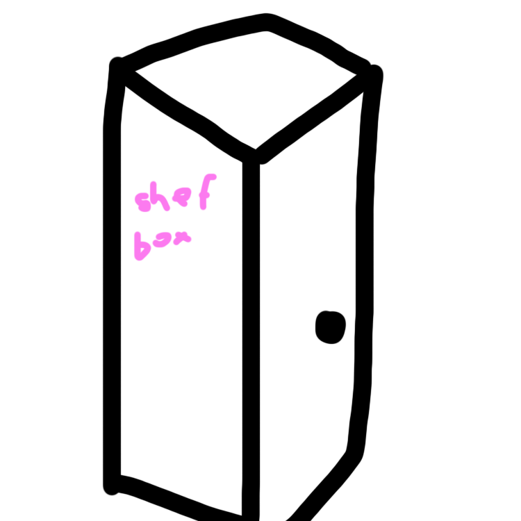
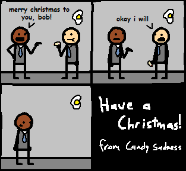

Episode 39
30th December, 2019
Back to News Archive
| Back to Homepage | Back to Shef Werld<< Previous Episode | >> Next Episode

"No one:
Santa: *I'm yeet that powerline bruh*"
$5.00 | ~8 ghost dollars | ⭐25 coins
Does not include potential cost from surprise mechanics (they're not lootboxes so it's not illegal!!!), purchases from Shef Kerbi's Apparel or preordering the Special Edition
-------------------------
MERY CHSRTMAS EEV
The SKNN staff wishes you a Hapy Holadeys this Chsrtmas Season
GRAND PORTAL MUSEUM OPENED
A portal museum containing lots of portals, including ones to places such as Earth, Mirror Dreem Lend and the Pokémon World has opened. Only staff can use the portals currently, although someone under the name of 'Arceus Equinox' came through from the portal from the Pokémon world and went directly to SKNN's headquarters.
APPLE'S TECHNOLOGY AND DESIGN CORNER: Episode 10
Unicode is being accused of having an extreme bias after their failure to add "BOWL OF BREAKFAST CEREAL WITHOUT MILK" to their ever expanding library of officially supported icons. Here's what the Unicode guy had to say in an interview with AT&DC:
Apple: I don't know.
Mark Davis: Uh, alright.
Apple: So, uh, how do respond to these allegations?
Mark Davis: What allegations?
Apple: Allegations of you being biased against people who eat cereal without milk.
Mark Davis: Oh. I thought this was about the lack of a green skin modifier. I was just talking to some guy about that.
Apple: Alright.
Mark Davis: Uh, well... they certainly exist. Look, we at Unicode really try our best to make people happy. And we like adding icons of significance. However, we feel that the group of people who eat cereal without milk is too, uh, minuscule, to be represented?
Apple: So what you're saying is that you don't want to represent minority gro-
Mark Davis: No, don't take it the wrong way! I just mean that we don't feel that the absence of milk in cereal is something people should really, you know. Care about? This much?
Apple: Mhm?
Mark Davis: You see, uh, Google doesn't even show any milk in the "BOWL OF BREAKFAST CEREAL" emoji. I feel like we should really just agree that people, uh, like cereal.
Apple: So, uh-
Mark Davis: Yes, we at Unicode want to bring cereal eaters together.
Apple: Well, that's interesting, because this person here on Twitter believes otherwise.

Mark Davis: Okay, first off, that tweet has three likes.
Apple: And?
Mark Davis: Also, I think they're talking about the skin tone thing.
Apple: Alright.
Mark Davis: What are you even writing down?
Apple: I'm not writing, I'm just drawing Trogdor the Burninator.
Mark Davis: What?
Apple: Uhh... this topic raises new and troubling questions, Mark, do you have anything you want to tell the epic gamers at home?
Mark Davis: Emojis were a mistake.
Apple: Alright.

THANOS CAT DEFEATED
Recently, it was discovered that Thanos Cat was defeated a few weeks ago when somebody at Mojang accidentally coded bees wrong, causing bees to wrongly recognize Thanos Cat as a bee hive and fly up Thanos Cat's butt. This promptly caused Thanos Cat to explode as the bees were too large to fit inside Thanos Cat's butt, killing and respawning him while making him drop the Infishity Gauntlet.
Thankfully, this means Thanos Cat couldn't have caused the disappearances. Unfortunately though, the bee who exploded Thanos Cat promptly picked up the Infishity Gauntlet and became Thanos Bee so now they're on the list of potential suspects, OH NO!
BOTS INVADE DREEM LEND
A group of flying robots were seen firing lasers at famous monuments around Dreem Lend. The Dreem Lend Police Force are finding their origin to shut down the robots. People believe Baika Kerbi was behind this
BREAKING NEWS: THE ARTICLE
Recently, an anonymous person /*`-^`|\ showed their ability to literally break news.000
How they do it is unclear, but it |`0000| seems to involve punching a hole into the article.
They have opted to demonstrate \ +.,_a i/ the ability using this article. 00000000000000
The text has been spaced to prevent loss of content.
WAFFLE PROTEST
There has been a protest of 400,000 outside of the Dreem Lend Government Beelding to ban waffles (for some unknown reason). The government have not said anything about it.

TEXT BASED GCHAT FORUMS TO WRITE DECLARATION OF INDEPENDENCE
The popular Text Based GChat Forums are planning to distance themselves from Scartch after a poll revealed the unanimous support of moving away from the childrens' programming site. Though we could not talk to the Scartch Team members about this, we're sure they're very happy to cut ties with a site they don't even have on their URL whitelist.
NEW GAME CONSOLE ANNOUNCED
Shef Kerbi Game Studios announced over Christmas their new console: the Shefbox Series S. It's predicted to be 50 times more powerful than all the last generation consoles combined (in terms of power consumption), comes with a fridge and is predicted to cost around $1000. The steep price has gone unfavorably with some people, though Shef Kerbi Gane Studios believes that the games that will be on it will more than make up for the high upfront cost.

SANTA CRASHES INTO A POWER LINE, CAUSES SANDWICH DISASTER
The opening of the amazing sandwich shop in the area of the intersection of Broadway and Kings Street has been delayed after Santa crashed into a nearby power line, causing a fire which eventually spread to the Sandwich Oil tanks and caused an explosion leading to 256 civilian casualties, at which point the number of casualties thankfully overflowed to zero. Unfortunately, the building was very damage, and then POLPCAT returned to the land of the living and kicked the remains of the building until it exploded. In addition, the knocking over of the power line caused SKNN to delay the bulletin for Christmas that was definitely finished. The building will be rebuilt soon.
HUNDREDS OF PEOPLE DISSAPEAR
The Dreem Lend Police reported yesterday that of people across Dreem Lend have disappeared at the same time, including but not limited to:
* Kreestan Baul, 60 evil kumquats, and 5 robot ones (from Batman vs. Evil Kumquats movies)
* Pacman and Gernfald's graves
* Linda Muncher, Professor Gourd-oh (if he is alive or not) and 5 students of Dreem Lend University
* A burger with clock eyes from Keynsun DDDO's clock ads
* Sam Wich, Ted (a random guy from Burlington) and 2 builders of the Burlington sandwich shop
* The guy who ate a sandwich in SKNN'S first ever issue
* Sunburn Ern and Bob Speedrunners (from the last issue)
* Thy N. Guhwon
* TSM_Liquid_FaZe_Ninja, Bob Bright (also from the last issue), Generic Person and Facts Man
People think either Thanos, Thanos Cat or Baika Kerbi made them dissapear.
SCP FOUNDATION DATA LEAK PROVED COMPLETELY POINTLESS, NO ONE READ IT
The SCP Foundation (Ghost editor's note: "That's the peanut thing, right? With that one doctor whose name starts with a C? I think I know what you're talking about") recently experienced a huge data leak in which the full files of ██ recently discovered anomalous objects, as well as countless other classified documents, were released on the internet. Thankfully for them, none of the ███ leaked documents were read by anyone, as, according to one person who read the file names, "none of them were in Series 1." Due to a phenomenon that will probably be given its own SCP number at some point, literally no one cares about any SCPs after SCP-999, except for, in the words of ████ ███████ (Ghost editor's note: "Whoops I'm using a black highlighter lol"), "okay, maybe besides that one with the IKEA and stuff, that was pretty rad." We predict that the SCP Foundation will be pretty mad at us for immortalizing this news on a totally safe GitHub page that probably doesn't probably violate some terms somewhere.
Now I don't wanna give my own opionion but...
OPIONION WITH SHEF KERBI
Christmas Ham after Christmas Ham now 40% off
So we told you Shef Kerbi News Network fans on our Scratch page that you could post anything with the #SKNN hashtag and you could end up in our paper! In this episode, we'll respond to some of your feedback with the new SKNN format, as well as show some of your cool stuff!
We began this issue's section with
I recently got yeeted out of the TBGs on an iPad!
And here were your responses:
Little Timmy wrote:
"GOOD DAY, LOSERS. Why is everything so big?! I decide to look at onto latest Shef Kerbi article and now what do I see but some flash advertisement and 'Junior Jumble' taking up my entire television AND fieldofvision! Why would you allow this?! ... Actually? You know what? HOW ABOUT I'M CALLING MY LAWYER RIGHT NOW BECAUSE OF YOU! HELLO? LAWYER? ... WELL, COMPLICATIONS HAVE JUST OCCURRED, MY LAWYER IS NO LONGER MY LAWYER, AND ALSO REEKS OF FISH LAIN OUT IN THE SUN FOR A CENTURY. GOOD DAY, LOSERS."
Okay so go to the settings menu, then click on graphics and there should be an option to adjust your FOV. Crank that up to like 300 or something and you should be able to see like a fish (I think, I remember hearing that fish can see 360º but I haven't been to school in 9 years so don't quote me on that[1] ).
orion28364 wrote:
"Ok seriously it's been like a month and everyone still just thinks I'm roleplaying, can someone help me"
I mean you could always try calling Satte Fram NOT State Farm and claim your house got flooded or something and from there you can say that you're stuck in an RP. Always works; people will take you more seriously if you tell them your house flooded.
xc1 wrote:

I don't understand.
If you would like to submit your own opionion for Shef Kerbi, just go to our social media, on Twitter, Instagram or Scartch.
But prefably Scratch because that's what everyone uses
----------------
COMIX
by Apple the Cat
Candy Sadness #22


WEATHER
Today's weather is still cold. Yay Christmas. Max -4, min -13
Tomorrow it'll be snowing so that's a thing, max -3 and min -11
{kind=link}
THANK YOU FOR WATCH. PLEASE TUN E IN NEXT TIME FOR MORE NESW

Shef Kerbi News Network follows the guidelines and conventions set by the 1984 High Quality News Act of Dreem Lend, which states
that any news published is to be of a high quality, is to remain unbiased and to show all sides of a news report, does not attack anyone, and protects the privacy
of people whose identities don't want to be revealed.
If you would like to file a complaint regarding content use, please message SKNN through our Scratch account. We also have a Twitter and Instagram account if you
prefer.
Shef Kerbi News Network respects the ancestors of Cappy Town, and understands that they are the reason why Dreem Lend exists.
Shef Kerbi News Network is proud to be a subsidiary of Shef Werld
this website is best viewed with Ned's Escape